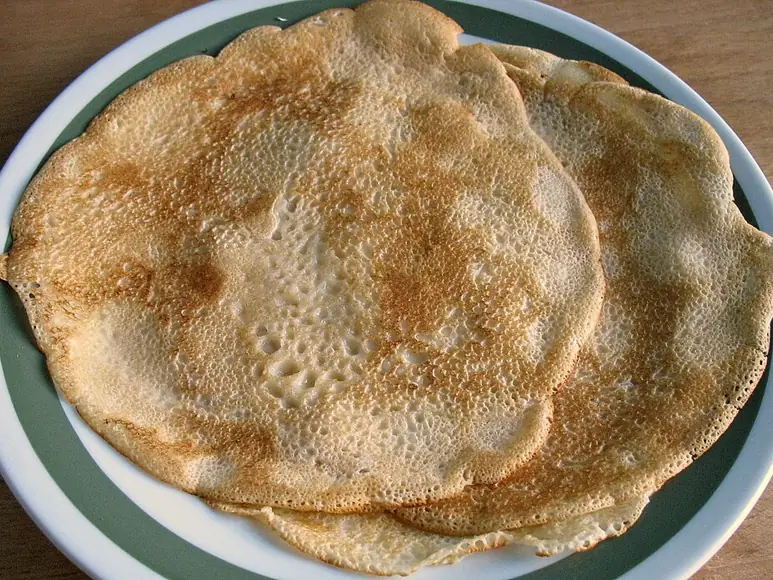

Фото: The original uploader was Hugo.arg at Lithuanian Wikipedia., Public domain

Блины на молоке
Тонкие блины на молоке, которые не рвутся на сковороде
45 мин4 порц.379 ккал на порциюБ 12 · Ж 16 · У 47Русская кухня
Продукты на 4 порц.
- Молоко2,5 стак.
- Яйцо куриное2 шт
- Мука пшеничная1,25 стак.
- Сахар1 ст. л.
- Соль0,5 ч. л.
- Растительное масло3 ст. л.
Как готовить
- Взбейте яйца с сахаром и солью венчиком, 1 минуту.
- Влейте половину молока, перемешайте.
- Постепенно всыпайте просеянную муку, размешивая до гладкости без комков.
- Влейте оставшееся молоко и 2 ст. л. масла, перемешайте. Оставьте тесто на 15 минут.
- Разогрейте сковороду на среднем огне и смажьте маслом. Влейте половник теста и наклоните сковороду, чтобы оно растеклось тонким слоем.
- Жарьте 1 минуту, пока края не станут золотистыми и не отойдут, переверните и жарьте ещё 30-40 секунд.
- Складывайте блины стопкой. Сковороду смазывайте маслом через каждые 2-3 блина.
Совет. Первый блин комом из-за плохо прогретой сковороды. Если блины рвутся, добавьте 1 ст. л. муки, если толстые - немного молока.